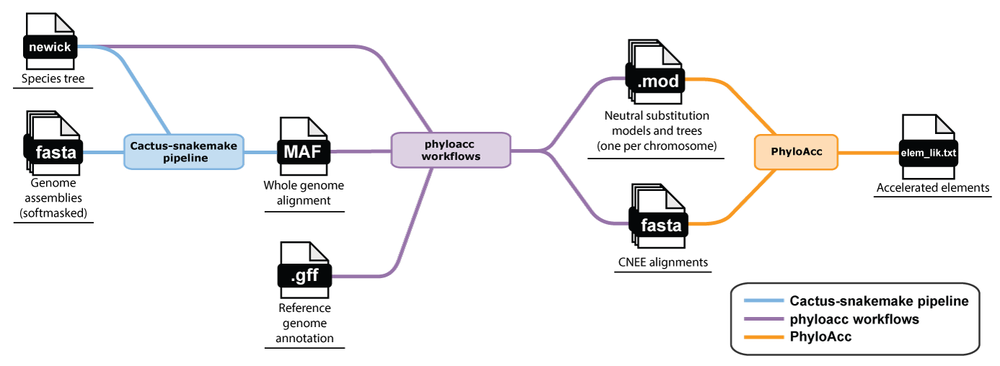
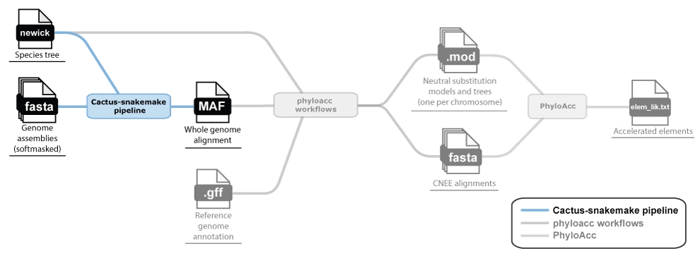
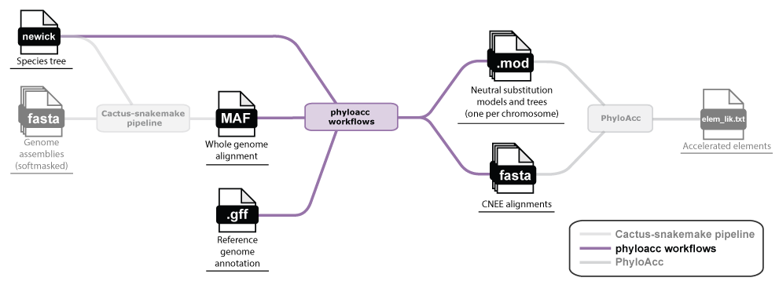
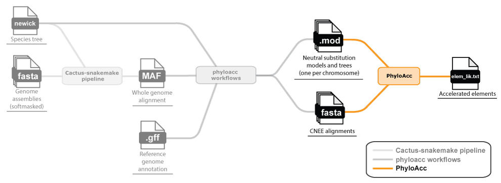

PhyloAcc is a Bayesian method for detecting lineage-specific shifts in subsitution rates in a given multi-species alignment with a corresponding phylogenetic tree and neutral model. It does this by allowing each lineage to belong to one of three rate classes (conserved, neutral, accelerated) and fitting 3 models to the locus that differ in which lineages are allowed to have different rates:
- M0 - null model: all branches in the tree have the same neutral substitution rate
- M1 - target model: some target branches in the tree are allowed to have a different accelerated substitution rates than the rest of the tree
- M2 - full model: all branches in the tree may have the conserved, neutral, or accelerated substitution rate
PhyloAcc compares the likelihood of each model using Bayes Factors to determine which model fits the data best for that locus. If a model fits M1 best, then there is good evidence for lineage specific acceleration in the target branches.
PhyloAcc is generalizeable to any set of loci (though notably there is no codon model implemented yet), but the most common use case is conserved non-exonic elements (CNEEs) or other noncoding regulatory elements.
PhyloAcc requires the following inputs to run:
- Sequence alignments for the regions you're testing (e.g. CNEEs).
-
A neutral substitution model: the expected, background rate of substitution in the absence of selective constraint.
This is estimated (e.g. with
phyloFit) from putatively neutral sites, typically 4-fold degenerate sites in genes, and given to PhyloAcc as a.modfile (output fromphyloFit). -
A phylogenetic tree: for your species, with branch lengths in units of substitutions under the neutral model.
You will need the species tree in Newick format beforehand and the branch lengths will be re-estimated by
phyloFitand bundled together with the substitution rate matrix in the same.mod. (PhyloAcc's gene tree model additionally needs a tree with branch lengths in coalescent units, which it may be able to estimate automatically.)
Starting from scratch
High level flowchart of inferring conserved elements and running PhyloAcc

If starting from scratch, in other words if you need to infer the conserved elements and neutral models and trees yourself, you will need to generate a whole genome alignment in order to predict them. This requires the following inputs:
- The softmasked genome FASTA files of the species you wish to analyze.
- An GFF annotation file for the reference sequence specified in the whole genome alignment.
- A Newick-formatted tree containing at least the topology of the species in the FASTA files.
A note on the species tree
We don't currently provide guidance on inferring or acquiring a species tree since there are many ways to do so. However, at least a topology is required for both the whole-genome alignment and inferring the neutral model.
Here are a couple ways you could get a species tree:
- Extract a tree from a published phylogeny of your species of interest.
- Infer a tree from a set of single-copy orthologs between your species. This is relatively easy if you already have orthologs identified, but will require more work if not.
We aim to provide more guidance on this in the future.
Phase 1: Generating a whole-genome alignment

A whole genome alignment (WGA) gives us access to any locus in the genome and is the best starting point for inferring both conserved elements and neutral models. We recommend Cactus for building whole genome alignments.
For this, all you need are the genome FASTA files of each species you want to include in your analysis and a species tree in Newick format (branch lengths in units of expected substitutions per site are helpful, but just the topology is required).
We have developed Snakemake workflows for running Cactus. Get started here:
This will generate a whole-genome alignment in MAF format, which is the starting point for Phase 2.
Phase 2: Predicting conserved elements and a neutral model

With the whole-genome alignment MAF file, you can predict conserved elements and estimate a neutral model. You will also need an annotation (GFF file) for at least one species in your alignment in order to extract 4-fold degenerate sites for estimating the neutral model.
We provide a set of phyloacc-workflows that fits a neutral model by chromosome with
phyloFit, predicts conserved elements with phastCons,
and extracts a final set of CNEE alignments. These are the direct inputs for PhyloAcc. See our walkthrough here:

Once you have your loci and neutral model (and tree), whether from your own alignments or from the
workflow above, head to the README for installing and running PhyloAcc itself,
including all inputs, usage examples, and options.